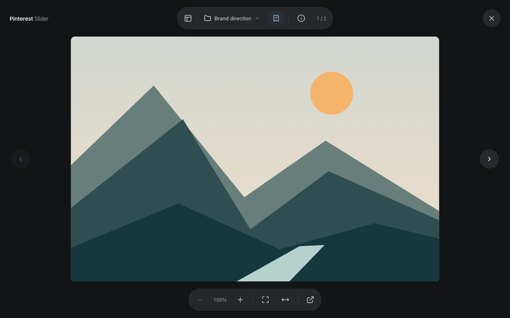
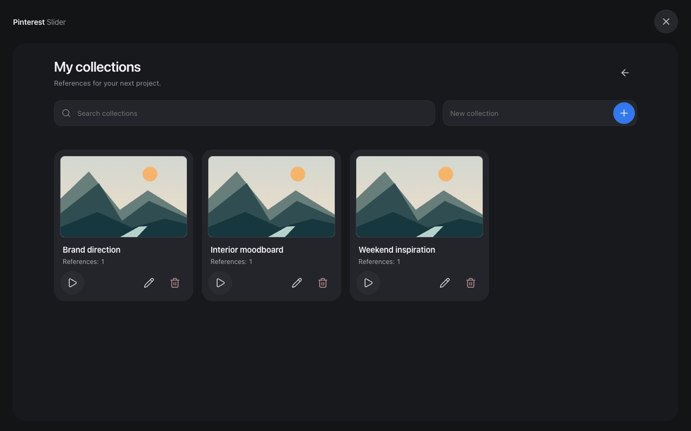

A NEW WAY TO SEE YOUR REFERENCES
Your inspiration deserves
a little breathing room.
A different perspective.
Less clutter.
More inspiration.
01 / TAKE A CLOSER LOOKOne image.
One image.
Your full attention.
Step out of the feed. Swipe through images, zoom into the details, and explore long references at a comfortable size.

02 / KEEP THE GOOD STUFFIdeas, with
Ideas, with
a place to land.
A new identity. A room refresh. Your next big thing. Collect references by project, then come back to just the images that matter.

Make room
for inspiration.
Reference Slider is awaiting Chrome Web Store review. In the meantime, you can install it manually from GitHub.
Install from GitHub ↗Questions or feedback? ↗